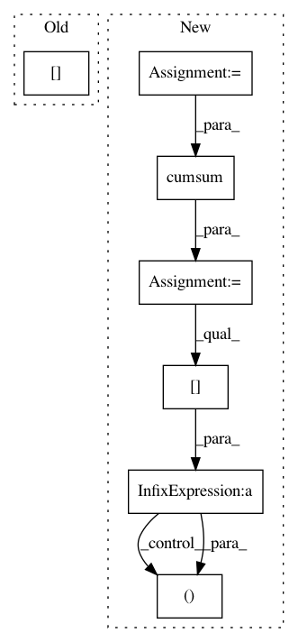

141cb21fec5b5557a800cb2131e463b92913985a,niftynet/utilities/misc_common.py,,otsu_threshold,#Any#,206
Before Change
sum_im = 0
for i in range(0, 256):
mean_ip = np.mean(img[img > bin_edges[i]])
mean_im = np.mean(img[img < bin_edges[i]])
sum_im = sum_im + hist[i]
sum_ip = 1 - sum_im
target = sum_ip*sum_im*np.square(mean_ip-mean_im)
After Change
def otsu_threshold(img):
""" Implementation of otsu thresholding"""
hist, bin_edges = np.histogram(img.ravel(), bins=256, density=True)
hist = hist.astype(float)
target_max = 0
threshold = bin_edges[0]
sum_im = 0
mean_ip = np.cumsum(hist)
mean_im = np.cumsum(hist[::-1])[::-1]
for i in range(0, 256):
sum_im = sum_im + hist[i]
sum_ip = 1 - sum_im
target = sum_ip * sum_im * np.square(mean_ip[i] - mean_im[i])
if target > target_max:
target_max, threshold = target, bin_edges[i]
return threshold
//def otsu_threshold(image):
In pattern: SUPERPATTERN
Frequency: 3
Non-data size: 7
Instances
Project Name: NifTK/NiftyNet
Commit Name: 141cb21fec5b5557a800cb2131e463b92913985a
Time: 2017-07-18
Author: wenqi.li@ucl.ac.uk
File Name: niftynet/utilities/misc_common.py
Class Name:
Method Name: otsu_threshold
Project Name: ContextLab/hypertools
Commit Name: edaf3f4c2303b8c0364266d092335733b66ffbd0
Time: 2016-12-19
Author: andrew.heusser@gmail.com
File Name: python/examples/hypertools_demo-PPCA.py
Class Name:
Method Name:
Project Name: ContextLab/hypertools
Commit Name: 878be5344a7cca66858ba82981713099bde5f12f
Time: 2016-12-19
Author: andrew.heusser@gmail.com
File Name: python/examples/hypertools_demo-PPCA.py
Class Name:
Method Name: